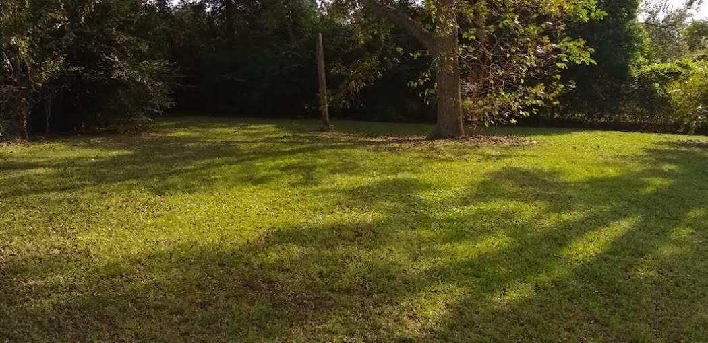
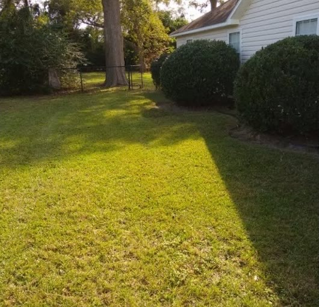
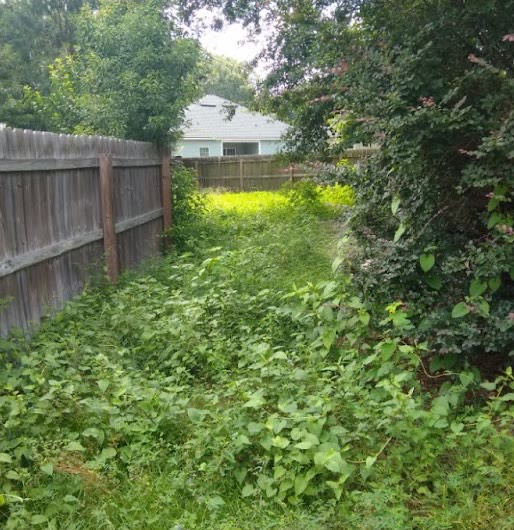
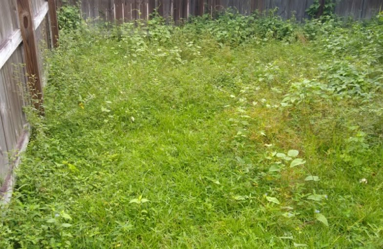
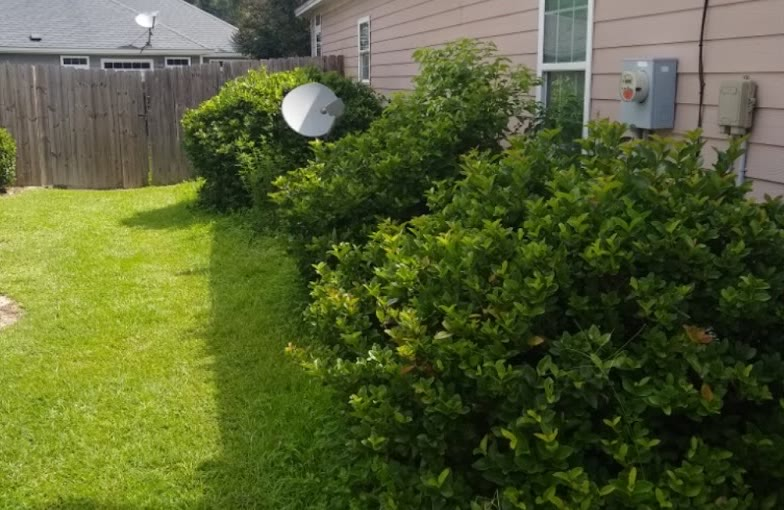
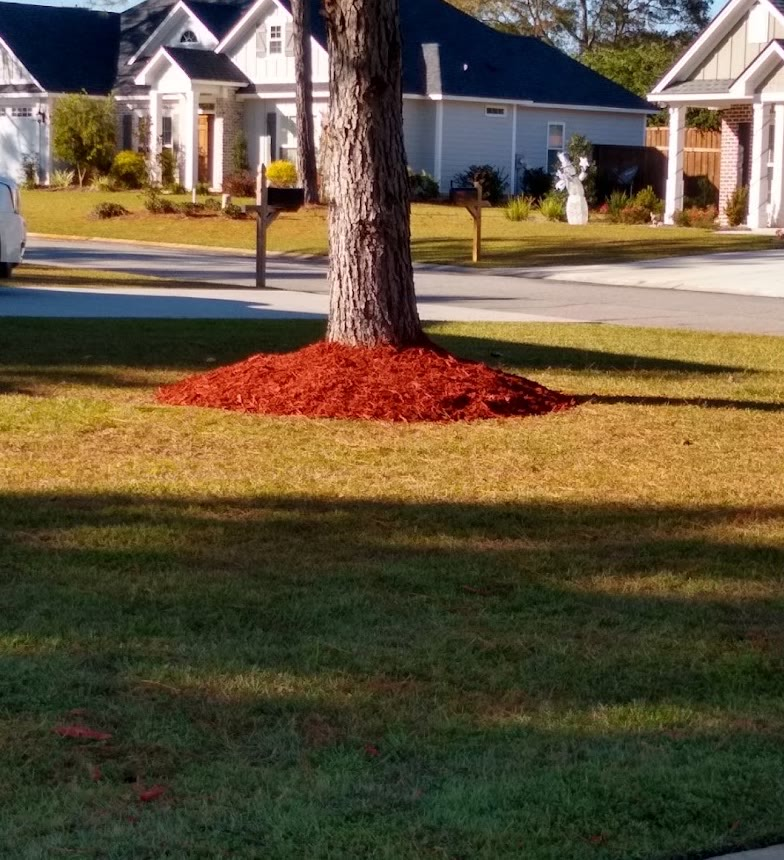
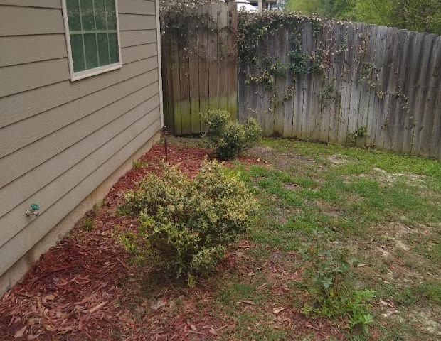
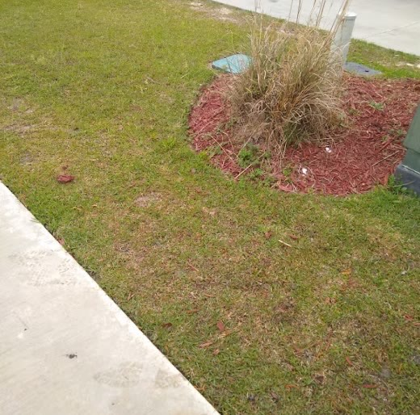

Landscaping& more.
Everything below comes from Capricorn Lawn Care’s own card and job photos. Not sure if your yard fits? Call Reginald or Diandra and ask.
“A beautiful lawn doesn’t happen by itself.”



Lawn cuts & upkeep
The everyday work: mowing front, back and side yards, trimming along fences and beds, and clean edges where the grass meets the driveway, walk and curb.
- Front, back and side yards
- Trimming and edging along hard surfaces
- Homes in Valdosta



Yard & overgrowth cleanups
Many of Capricorn’s photo sets start with a “Before” shot like these: weeds up to the fence, vines along the house, leaves everywhere. Cleanups bring the yard back to a lawn that can be kept up.
- Overgrown back yards and fence lines
- Leaf and debris cleanups
- A good starting point for regular cuts



Mulch, pine straw & flower beds
Fresh red mulch around trees and along the house, beds re-shaped with clean edges, and new flowers planted in the front beds. Pine straw is on the list too.
- Mulch rings and bed refreshes
- Pine straw
- New flowers and plants in existing beds



Pressure washing & more
Pressure washing and the other jobs that come up around a yard. The card says “Landscaping & More”, so if it’s outside, ask.
- Pressure washing
- Other yard jobs on request
Questions, answered.
Straight from Capricorn Lawn Care’s business card and Google profile.
How do I get an estimate?
Call 229-412-4530 or use the estimate form. Capricorn Lawn Care offers online estimates, and visits are by appointment.
When do you work?
Monday, Tuesday and Thursday 7 AM–5:30 PM, Wednesday 7:30 AM–5:30 PM and Friday 7 AM–5 PM. Closed Saturday and Sunday.
Are you licensed and insured?
Yes. “Licensed & Insured” is printed on the Capricorn Lawn Care business card.
Who owns Capricorn Lawn Care?
Reginald and Diandra Dennis. Both names are on the card, along with the cell number 229-412-4530.
Where do you work?
Capricorn Lawn Care is based in Valdosta, Georgia. Ask when you call if your street is on the route.